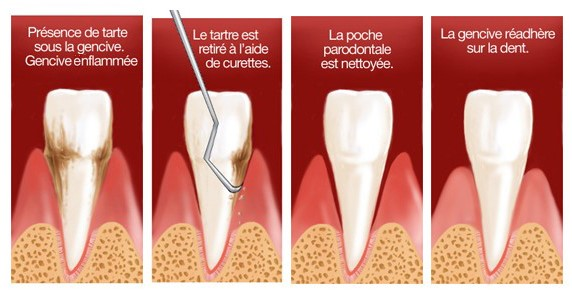
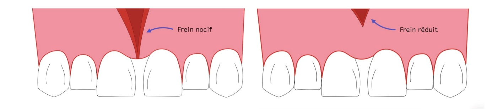
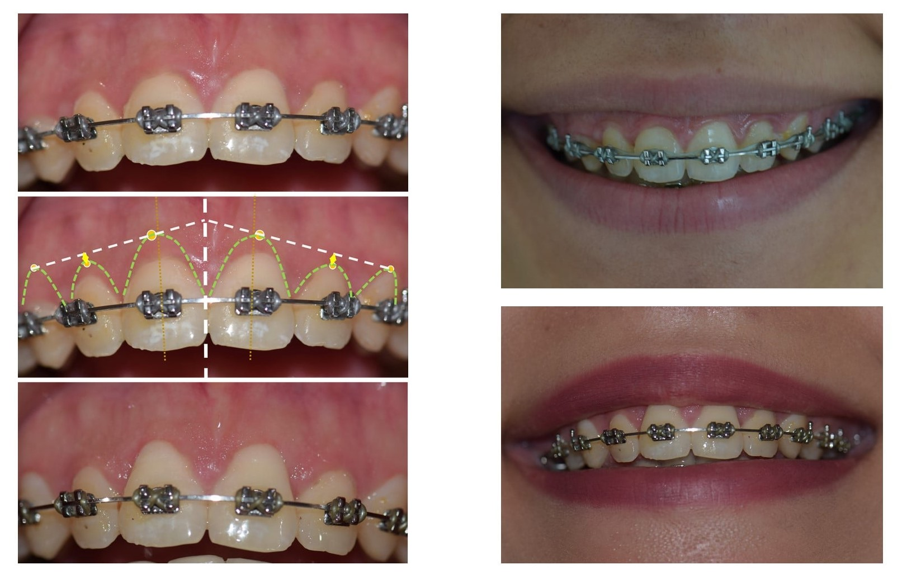
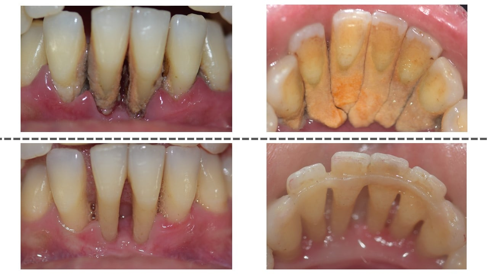

استبدال الأسنان المفقودة بغرسات تيتانية، مما يوفر حلاً دائمًا وجماليًا ووظيفيًا لاستعادة ابتسامة متناغمة.

صناعة وتركيب التيجان والجسور أو الأطقم الكاملة على الغرسات لاستعادة الوظيفة الجمالية للأسنان.

زرع الغرسات على الفور بعد استخراج الأسنان، مما يوفر حلاً سريعًا مع تقليل الوقت المستغرق بدون سن.
إجراء يهدف إلى استعادة حجم العظم غير الكافي للسماح بزراعة الزرعات، مما يضمن أساسًا قويًا ومستقرًا.
إعادة تأهيل كامل للقوس السني باستخدام عدة زراعة، مما يسمح باستبدال عدة أسنان مفقودة بحلول تركيبية ثابتة.
تنظيف تحت اللثة لإزالة البلاك والتكلس، وهو أمر ضروري لإيقاف تقدم الأمراض اللثوية
رعاية جراحية تهدف إلى منع ومعالجة التهابات اللثة والهياكل الداعمة للأسنان لمنع فقدان الأسنان
تدخلات جراحية لتغطية تراجع اللثة وتحسين كل من المظهر الجمالي وصحة اللثة

تصحيح الالتصاقات الشفوية أو اللسانية التي تسبب مشاكل جمالية أو وظيفية، لا سيما في تقويم الأسنان أو لتسهيل زراعة الأسنان
تقنية جراحية تستخدم الأغشية لتعزيز تجديد العظام والأنسجة الداعمة حول الأسنان المتأثرة بالأمراض اللثوية
تدخل جراحي يهدف إلى إزالة النسيج اللثوي الزائد في حالات التهاب اللثة المتقدم أو لأسباب جمالية، من أجل تقليل الجيوب اللثوية وتسهيل نظافة الفم
تثبيت اللثة هو علاج يهدف إلى استقرار الأسنان المتحركة بعد فقدان الدعم العظمي الناتج عن التهاب اللثة. يعزز استقرار الأسنان عن طريق توزيع قوى المضغ والمساعدة في الحفاظ على محاذاة الأسنان
يتم إجراء الخلع الجراحي عندما تكون الأسنان متأثرة أو يصعب الوصول إليها، مثل ضروس العقل. يسمح هذا الإجراء بالخلع الآمن للأسنان مع تقليل المخاطر والمضاعفات.

يتضمن استئصال الكيسة إزالة الكيسة الموجودة في العظام أو الأنسجة الرخوة. تهدف هذه الجراحة إلى القضاء على العدوى وتعزيز تجديد العظام لاستعادة صحة الفم.